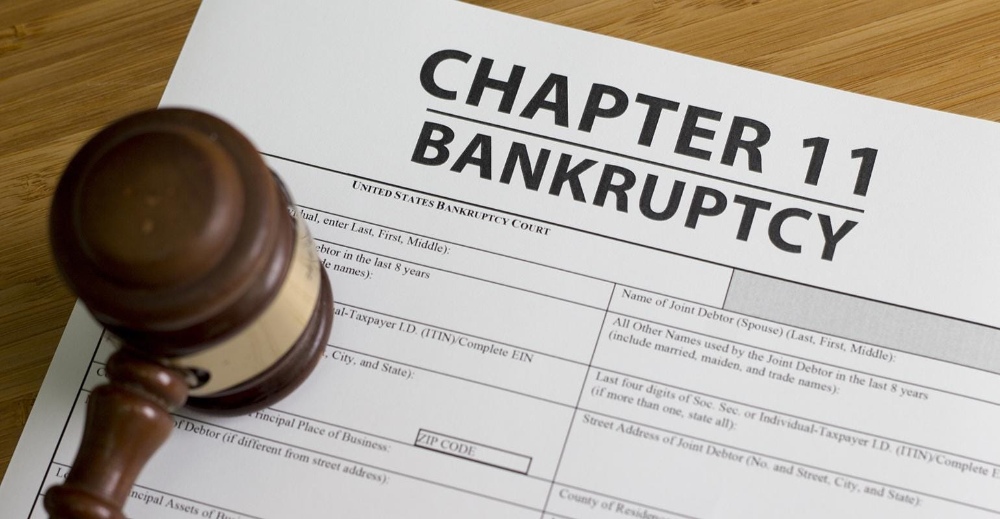
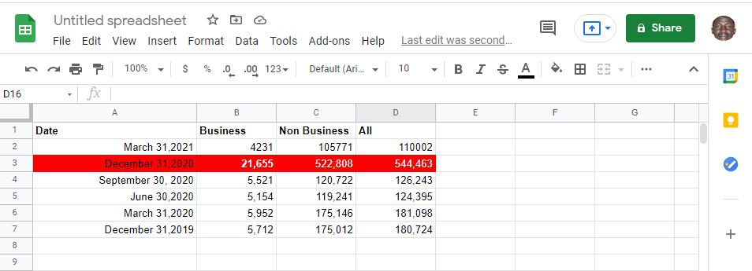
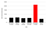

Bankruptcy and business restructuring


In one of my last articles titled corporate restructuring, it was stated that corporate restructuring will matter a lot after the pandemic period and this article about SPAC tried to highlight the opportunity for an investor to go after retail stores and brands that are facing trouble due to the pandemic situation for acquiring them using the investment strategy of her or his choice. This investment strategy could be a Spac but the investor could also use a Leverage Buy-Out (LBO) strategy.
Today, I was willing to know by my own means if more businesses were in trouble during these last 6 months periods. I dug into the data of the Us Court of Bankruptcy and here is, shown in a simple spreadsheet’s table, what I have discovered,

If we take into account businesses only here is what we get

almost the 4x the average number of filed bankruptcy per three months were filled at the end of December 31, 2020. Of course, this shows clearly that Us businesses were devastated by the corona tsunami and the US economy alone is enough for saying that it is the whole world economy that suffered this pandemic period because the Us economy is a good proxy for measure the world economy. You can read this article about taking proxies for decision-making.
there is an adage that says that for each bad opportunity there is a good one attached to it. This increasing number of bankrupted businesses is a signal of a bad economic time but for an investor who has the gut and skills of taking a business and fixing it, this can be seen as an opportunity for going after these businesses by acquiring them cheaper and restructuring them to be again winning profitable businesses. This needs for the part of the entrepreneur to be specific and focused because it will be a waste of time and energy to go after all these 20K+ bankrupted businesses. The advice for the investor is to focus on a specific segment, sector, or industry. In my last article the point of focus was retail brands because if the entrepreneur can implement and execute a digital transformation strategy and exploit a niche, he or she could a leader and be the amazon of it. It is the idea that is behind the short stock squeeze of GameStop because some investors believe that retail stores like GameStop could be transformed into winning all-channel stores that will compete or even defeat amazon in a specific segment.
For me, the focus is on dying Consumer brands and game studios that had been in trouble publishing games last year because of difficult team coordination and isolation but the goal is the support the entrepreneurs and employees that were behind those businesses because I am not at ease exploiting the misfortune of other. If I would take Adam Grant’s classification of the type of person I would say that I am a Giver rather than a taker but this is not about me but you. If you want to surf the wave of post-pandemic investment this is a starting point. You could dig deeper and find the businesses that you could acquire and put on the right path to growth.
Maybe from time to time, I will be publishing more granular data about these opportunities and exploitable strategies that could help you invest and win in this post-pandemic era. Then this article is to be continued but extends these ones below
PS: this article has nothing to do with the Greyio Heart Experiment but is part of the work of Book Dojo, the publishing startup sister of Godda Game the game studio startup both children of emb…